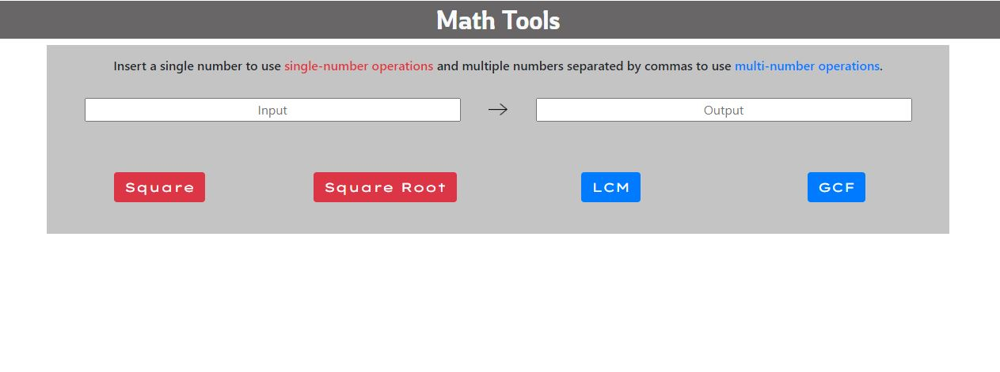
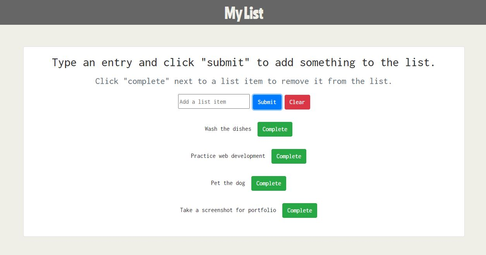
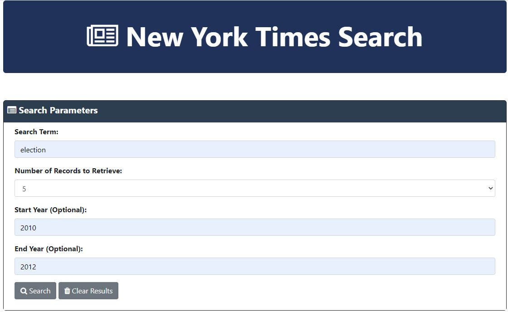

Portfolio
Blockhome (Click to download zip file)
Blockhome was a game I created in Unity as a fun side project. There are two games included: Dodgeblock and Adventureblock.
Dodgeblock was a game made in a 3D environment with a block on a platform that you control, and you have to avoid blocks that move towards you.
Adventureblock is a 2D game where you control a square (remember, 2D!) and have to avoid three different kinds of squares that will move in three different patterns.
ABBA Fan Page (Click to visit page)
This was a fan website that I created for the prework for the coding bootcamp. ABBA is a band that I was introduced to when I was very young by my parents who are both huge fans.
Math Tools (Click to visit page)

This is a page I made to practice and test my ability to work with javascript and to navigate the DOM. The user can input one or two numbers and use different buttons to perform
different operations. During the creation of this project, I found myself considering many different optimizations to include to shorten the time it took to computer the GCF and
LCM.
My List (Click to visit page)

This is another page I made to practice working with javascript. I also included local storage functionality so that if the user leaves the website, the list will remain.
This was the last project I created before learning how to use jQuery, so I'm very excited moving forward as I hope that will make my life a lot easier.
Tic-Tac-Toe Game (Click to visit page)

This is the first page I made using jQuery, and it was nice to not have to write as much code for the same functionality.
The most frustrating part of this assignment is that I could not figure out how to make text sizes responsive without resorting to either
media queries in CSS or an event listener in JS (I picked the media queries).
NYT Search (Click to visit page)

This is another page I made as part of an in-class exercise. I used jQuery to make my code more concise,
including the ajax call to the New York Times API that I used to pull articles from.
Super Similar (Click to visit page)
As part of a group project for my bootcamp, my group created a website using two movie-related APIs that presents the user with movies or shows similar to their input.
My part of this project was primarily focused on learning and implementing the Foundation CSS framework.
This includes both the structure of the HTML and the responsiveness of the page.